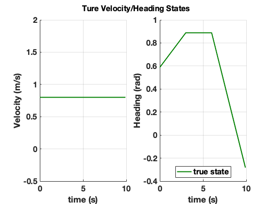
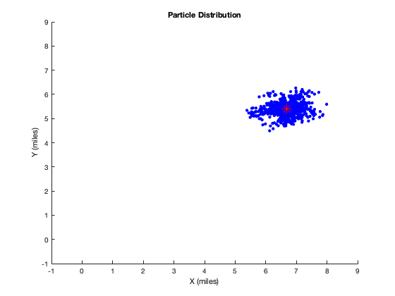
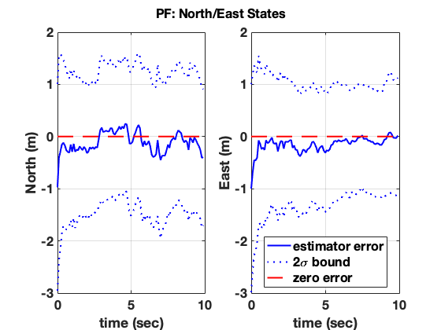
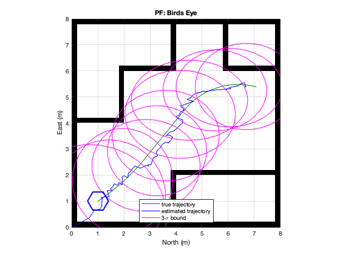

Contents
Problem Set--up: Define Scenario, Simulate no noise case
clear all;close all;
rng('default')
video_name='PF_Gaussian1.mp4';
record_video=0;
Uacc = [zeros(1,100)];
Uomega = [ones(1,30)*0.1 zeros(1,30) -ones(1,40)*0.3];
[Xnonoise,n,t,dt,nt]=simulate_robot(Uacc,Uomega);
nk=nt;
plot_birdseyeview(Xnonoise,[],[],'True trajectory View');
nx=1:10:100;
x=Xnonoise(1,nx);
y=Xnonoise(2,nx);
xpos=[0,1.1554,0,0,0,0.79,0,0.558,0,0];
xneg=[0.422,0,0.3021,0.0755,0.2741,0,0.0494,0,0.3838,0.1087];
ypos=[0.5887,0,0.0354,0,0.5228,0.1143,0.3003,0.1914,0.2372,0.4706];
yneg=[0,0.8959,0,0.2683,0,0,0,0,0,0];
hold on
errorbar(x,y,yneg,ypos,xneg,xpos,'o')
ii_plot=[3 4];
plot_estimator(t,Xnonoise,[],[],ii_plot,'Ture Velocity/Heading States');

Create IMU measurements (accel, rate gyro) and 2D GPS
nw=2;
Qw=diag([0.1^2 0.04^2]);
Qsq=sqrtm(Qw);
w=sqrtm(Qw)*randn(nw,nk);
Zacc=Uacc+w(1,:);
Zrg=Uomega+w(2,:);
nz=2;
R=eye(nz)*1^2;
v=sqrtm(R)*randn(nz,nt);
Z=[Xnonoise(1:2,:)] + v;
Hgps=[eye(2) zeros(2,2)];
SENSOR MODEL: Obstalce detector
mx=0;
sx=1;
pdfx = makedist('Normal',mx,sx^2);
Lx =makedist('Normal',0,sx^2);
SENSOR MODEL: Odometry
my=0;
sy=1;
pdfy = makedist('Normal',my,sy);
Ly = makedist('Normal',0,sy);
PF
ns=1000;
x0=random(pdfx,ns,1);
y0=random(pdfy,ns,1);
X=zeros(ns,2,nk);
X(:,:,1)=[x0 y0];
W=zeros(ns,nk);
W(:,1) = ones(ns,1)/ns;
xEst=zeros(nk,2);xEst(1,:)=mean(X(:,:,1),1);
xSig=zeros(nk,2);xSig(1,:)=std(X(:,:,1),1);
figure(10);
hold on;
hPoints = plot(X(:,1,1),X(:,2,1),'b.','markersize',10);
hEst = plot(xEst(1,1),xEst(1,2),'r*','markersize',10);
hold off;
title('Particle Distribution');
xlabel('X (miles)');ylabel('Y (miles)');
axis([-1 9 -1 9]);
Neff_thresh=ns;
if record_video,
vidfile = VideoWriter(video_name,'MPEG-4');
vidfile.FrameRate = 10;
open(vidfile);
F(1) = getframe(10);
writeVideo(vidfile,F(1));
end
for k=2:nk,
Xprior=X(:,:,k-1);
V=Xnonoise(3,k);
theta=Xnonoise(4,k);
u=ones(ns,1)*dt*[V*cos(theta) V*sin(theta)];
w1=randn(ns,2)*Qsq;
Xpred=Xprior+u+w1;
Zcurrent=Z(:,k)';
Zhat = Xpred;
Inn = ones(ns,1)*Zcurrent - Zhat;
for ipart=1:ns,
L(ipart,1) = pdf(Lx,Inn(ipart,1))*pdf(Ly,Inn(ipart,2));
end
Wk_unnorm=W(:,k-1).*L;
Wk=Wk_unnorm/sum(Wk_unnorm);
Neff=1/[Wk'*Wk];
if Neff<Neff_thresh,
CDF = cumsum(Wk)/sum(Wk);
CDF_plus=CDF+rand(ns,1)*1E-6;
iSelect = rand(ns,1);
iNextGeneration = interp1(CDF_plus,1:ns,iSelect,'nearest','extrap');
X(:,:,k) = Xpred(iNextGeneration,:);
W(:,k) = ones(ns,1)/ns;
else,
X(:,:,k) = Xpred;
W(:,k)=Wk;
end
xEst(k,:) = sum(Wk.*X(:,:,k),1);
xSig(k,:) = sqrt([sum(Wk.*(X(:,1,k)-xEst(k,1)).^2,1) sum(Wk.*(X(:,2,k)-xEst(k,2)).^2,1)]);
figure(10);
set(hPoints,'XData',X(:,1,k));
set(hPoints,'YData',X(:,2,k));
set(hEst,'XData',xEst(k,1));
set(hEst,'YData',xEst(k,2));
drawnow;
pause(0.1);
if record_video,
F(k)=getframe(10);
writeVideo(vidfile,F(k));
end
end
if record_video,
close(vidfile)
end
P = zeros(2,2,nk);
for i=1:nk
Sx= xSig(i,1);
Sy= xSig(i,2);
P(:,:,i)= [Sx 0 ; 0 Sy];
end
ii_plot=[1 2];
plot_estimator_error(t,Xnonoise,xEst',P,ii_plot,'PF: North/East States');
plot_birdseyeview(Xnonoise,xEst',P,'PF: Birds Eye');
myMap =
binaryOccupancyMap with properties:
mapLayer Properties
LayerName: 'binaryLayer'
DataType: 'logical'
DefaultValue: 0
GridLocationInWorld: [0 0]
GridOriginInLocal: [0 0]
LocalOriginInWorld: [0 0]
Resolution: 5
GridSize: [40 40]
XLocalLimits: [0 8]
YLocalLimits: [0 8]
XWorldLimits: [0 8]
YWorldLimits: [0 8]
x =
0.6000 0.8000 1.2000 1.4000 1.2000 0.8000 0.6000
y =
1.0000 0.6536 0.6536 1.0000 1.3464 1.3464 1.0000
  
function [Xnonoise,n,t,dt,nt]=simulate_robot(Uacc,Uomega);
dt=0.1;
nt=length(Uacc);
t=[0:dt:dt*(nt-1)];
n=4;
Xnonoise=zeros(n,nt);
Xnonoise(:,1)=[1;1;8/10;0.588];
for k=1:(nt-1),
Vk=Xnonoise(3,k);
Tk=Xnonoise(4,k);
Xnonoise(:,k+1) = Xnonoise(:,k) +...
dt*[Vk*cos(Tk);Vk*sin(Tk);Uacc(k);Uomega(k)];
end
end
myMap =
binaryOccupancyMap with properties:
mapLayer Properties
LayerName: 'binaryLayer'
DataType: 'logical'
DefaultValue: 0
GridLocationInWorld: [0 0]
GridOriginInLocal: [0 0]
LocalOriginInWorld: [0 0]
Resolution: 5
GridSize: [40 40]
XLocalLimits: [0 8]
YLocalLimits: [0 8]
XWorldLimits: [0 8]
YWorldLimits: [0 8]
x =
0.6000 0.8000 1.2000 1.4000 1.2000 0.8000 0.6000
y =
1.0000 0.6536 0.6536 1.0000 1.3464 1.3464 1.0000
Least Squares estimation
function [xe]=Elocation(Xnonoise,tn)
bA = [2;4];
bB = [6;6];
bC = [4;2];
xtrue = [Xnonoise(1,:);Xnonoise(2,:)];
RA = sqrt((bA(1) - xtrue(1,tn)).^2 + (bA(2) - xtrue(2,tn)).^2);
RB = sqrt((bB(1) - xtrue(1,tn)).^2 + (bB(2) - xtrue(2,tn)).^2);
RC = sqrt((bC(1) - xtrue(1,tn)).^2 + (bC(2) - xtrue(2,tn)).^2);
htrue=[RA RB RC];
na=100;
Rpart = diag([10 10 10]);
va = sqrtm(Rpart)*randn(3,na);
za = [RA;RB;RC]+ va;
xhat=[0;0;0];
NLS_pass=1;J=[];Jold=1;iter=0;
while NLS_pass,
iter=iter+1;
xj=xhat(:,iter);
RAhat=sqrt((bA(1) - xj(1))^2 + (bA(2) - xj(2))^2);
RBhat=sqrt((bB(1) - xj(1))^2 + (bB(2) - xj(2))^2);
RChat=sqrt((bC(1) - xj(1))^2 + (bC(2) - xj(2))^2);
H=[(-bA(1)+xj(1))/RA (-bA(2)+xj(2))/RA;
(-bB(1)+xj(1))/RB (-bB(2)+xj(2))/RB;
(-bC(1)+xj(1))/RC (-bC(2)+xj(2))/RC];
M1=0;M2=0;J(iter)=0;
for k=1:na,
M1=M1+H'*inv(Rpart)*H;
ek=[za(:,k)-[RAhat;RBhat;RChat]];
M2=M2+H'*inv(Rpart)*ek;
J(iter)=J(iter)+0.5*ek'*inv(Rpart)*ek;
end
Sigma_x = inv(M1);
xhat(1:2,iter+1)=xj(1:2,:)+inv(M1)*M2;
if abs(Jold-J(iter))<1E-3,
NLS_pass=0;
else,
Jold=J(iter);
end
end
xe=xj(1:2);
end
Plotting functions
function plot_estimator(t,x1,x2,P2,ii_plot,title_name);
axis_names={'X (miles)','Y (miles)','Velocity (m/s)','Heading (rad)','Accel Bias (m/sec^2)','RG Bias (rad/sec)'};
figure;subplot(122);
ii_x1=[];ii_x2=[];ii_P2=[];
for i=1:length(ii_plot),
ii=ii_plot(i);
subplot(1,2,i);
hold on;
if ~isempty(x1),
plot(t,x1(ii,:),'color',[0 0.5 0]);ii_x1=1;
end
if ~isempty(x2),
plot(t,x2(ii,:),'b-');ii_x2=2;
end
if ~isempty(P2)
plot(t,x2(ii,:)'-2*sqrt(squeeze(P2(ii,ii,:))),'b:');
plot(t,x2(ii,:)'+2*sqrt(squeeze(P2(ii,ii,:))),'b:');ii_P2=3;
end
hold off
xlabel('time (s)');ylabel(axis_names(ii));grid;
xlim([0 10]);set(gca,'xtick',[0:5:10]);
end
legend_names={'true state','estimate','2\sigma bound'};
legend(legend_names{ii_x1},legend_names{ii_x2},legend_names{ii_P2},'Location','South');
sgtitle(title_name);
PrepFigPresentation(gcf);
end
function plot_estimator_error(t,x1,x2,P2,ii_plot,title_name);
axis_names={'North (m)','East (m)','Velocity (m/sec)','Heading (rad)','Accel Bias (m/sec^2)','RG Bias (rad/sec)'};
figure;subplot(122);
for i=1:length(ii_plot),
ii=ii_plot(i);
subplot(1,2,i);
err=x2(ii,:)-x1(ii,:);
plot(t,err,'b-');
hold on;
if ~isempty(P2)
plot(t,err'-2*sqrt(squeeze(P2(ii,ii,:))),'b:');
plot(t,zeros(length(t),1),'r--');
plot(t,err'+2*sqrt(squeeze(P2(ii,ii,:))),'b:');
end
hold off
xlabel('time (sec)');ylabel(axis_names(ii));grid;
xlim([0 10]);set(gca,'xtick',[0:5:10]);
end
legend('estimator error','2\sigma bound','zero error','Location','South');
sgtitle(title_name);
PrepFigPresentation(gcf);
end
function plot_birdseyeview(x1,x2,P2,title_name);
ii_x1=[];ii_x2=[];ii_P2=[];
figure;
myMap=binaryOccupancyMap(8,8,5)
walls=zeros(40,40);
walls(1,:)=1;
walls(end,:)=1;
walls(:,1)=1;
walls(:,end)=1;
walls(10:20,10)=1;
walls(1:10,20)=1;
walls(30:40,20)=1;
walls(20,1:10)=1;
walls(10,10:20)=1;
walls(30,20:40)=1;
walls(10,30:40)=1;
walls(1:10,30)=1;
setOccupancy(myMap,[1 1],walls,"grid")
show(myMap)
hold on
if ~isempty(x1),
plot(x1(1,:),x1(2,:),'color',[0 0.5 0]);ii_x1=1;
end
hold on;
if ~isempty(x2),
plot(x2(1,:),x2(2,:),'b-');ii_x2=2;
end
if ~isempty(P2),
iell=[2 10:10:100];
for i=1:length(iell),
ii=iell(i);
[Xe,Ye] = calculateEllipseCov(x2([1 2],ii),P2([1 2],[1 2],ii),3);
plot(Xe,Ye,'m-');
end
ii_P2=3;
end
xlabel('North (m)');ylabel('East (m)');grid;
hold on;
[robot] = hexagon(0.4,1,1);
hold off
legend_names={'true trajectory','estimated trajectory','3\sigma bound'};
legend(legend_names{ii_x1},legend_names{ii_x2},legend_names{ii_P2},'Location','South')
title(title_name);
end
function [Xe,Ye] = calculateEllipseCov(X, P, nsig, steps)
error(nargchk(2, 3, nargin));
if nargin<3, nsig = 1; end
if nargin<4, steps = 36; end
[U,S,V]=svd(P);
s1=sqrt(S(1,1));s2=sqrt(S(2,2));angle=acos(U(1,1))*180/pi;
x=X(1);
y=X(2);
s1=nsig*s1;
s2=nsig*s2;
beta = angle * (pi / 180);
sinbeta = sin(beta);
cosbeta = cos(beta);
alpha = linspace(0, 360, steps)' .* (pi / 180);
sinalpha = sin(alpha);
cosalpha = cos(alpha);
Xe = (x + (s1 * cosalpha * cosbeta - s2 * sinalpha * sinbeta));
Ye = (y + (s1 * cosalpha * sinbeta + s2 * sinalpha * cosbeta));
end
function PrepFigPresentation(fignum);
figure(fignum);
fig_children=get(fignum,'children');
for i=1:length(fig_children),
set(fig_children(i),'FontSize',16);
set(fig_children(i),'FontWeight','bold');
fig_children_children=get(fig_children(i),'Children');
set(fig_children_children,'LineWidth',2);
end
end
function [robot]=hexagon(cote,x0,y0)
x=cote*[-1 -0.5 0.5 1 0.5 -0.5 -1]+x0
y=cote*sqrt(3)*[0 -0.5 -0.5 0 0.5 0.5 0]+y0
robot=plot(x,y,'b','Linewidth',2);
end